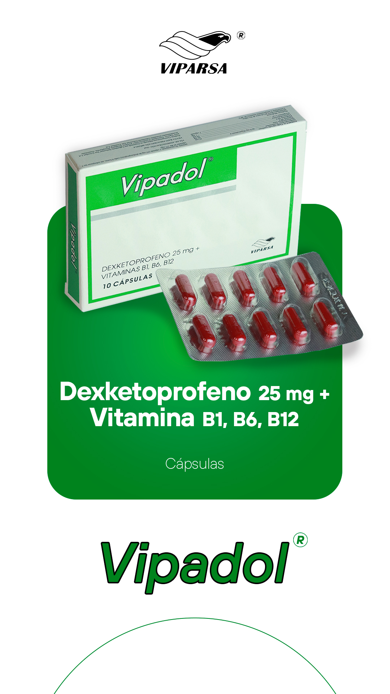

scienceFÓRMULA
Cada cápsula contiene:
Dexketoprofeno (como Dexketoprofeno trometamol) 25 mg
Excipientes, c.s.
clinical_notesINDICACIONES
Es útil para tratar el dolor de intensidad leve o moderado asociado con los efectos analgésicos y desinflamatorios de los AINEs, tales como dolor músculo esquelético, dismenorrea, odontalgia. Se puede minimizar la aparición de reacciones adversas si se utilizan las dosis más eficaces durante el menor período de tiempo necesario para controlar los síntomas.
medicationDOSIS Y FORMA DE ADMINISTRACIÓN
Adultos
La dosis recomendada por vía oral es de 25 mg cada 8 horas. La dosis total diaria no debe exceder de 75 mg. Se puede minimizar la aparición de reacciones adversas si se utilizan las dosis más eficaces durante el menor período de tiempo necesario para controlar los síntomas. La administración como mínimo 30 minutos antes de las comidas.
Pacientes de edad avanzada
En pacientes de edad avanzada la dosis diaria total recomendada es de 50 mg. La dosis total solo se incrementará a la dosis máxima si se ha tolerado satisfactoriamente.
infoNo debe utilizarse en niños ni en adolescentes y el producto no debe emplearse en niños ni adolescentes.
blockCONTRAINDICACIONES
- Hipersensibilidad al dexketoprofeno o a otro AINE. Historia de ataques de asma, broncoespasmo, rinitis aguda, o pólipos nasales, urticaria o edema angioneurótico.
- Úlcera péptica activa, hemorragia gastrointestinal activa u otras hemorragias activas.
- Otras hemorragias activas o diátesis hemorrágica.
- Enfermedad de Crohn o colitis ulcerosa activa.
- Historia de asma bronquial.
- Insuficiencia cardíaca grave.
- Insuficiencia renal de moderada a severa.
- Insuficiencia hepática severa.
- Embarazo y lactancia. Tercer trimestre de embarazo o lactancia.
- Pacientes con trastornos hemorrágicos y trastornos de la coagulación.
priority_highEFECTOS ADVERSOS
- Náuseas, vómitos, diarrea, trastornos digestivos (dispepsia, dolor gástrico)
- Insomnio, cefalea, mareos, somnolencia, vértigo
- Sequedad de boca, flatulencia, gastritis, estreñimiento
- Erupción cutánea, fatiga, dolor, sensación febril, rigidez
- Edema de párpados, visión borrosa
- Úlcera péptica, hemorragia o perforación de úlcera péptica
- Hepatitis, acné, sudoración, dolor lumbar, trastornos renales
- Reacciones anafilácticas, incluyendo shock anafiláctico
- Pancreatitis, daño hepatocelular
- Reacciones cutáneas graves (síndrome de Stevens-Johnson, necrólisis epidérmica tóxica)
- Insuficiencia renal aguda
sync_altINTERACCIONES MEDICAMENTOSAS
- Anticoagulantes: Los AINEs pueden aumentar los efectos de los anticoagulantes tipo warfarina.
- Antiagregantes plaquetarios e ISRS: Aumento del riesgo de hemorragia gastrointestinal.
- Corticosteroides: Aumento del riesgo de úlceras o hemorragia gastrointestinal.
- Litio, metotrexato, digoxina: Pueden incrementarse los niveles plasmáticos de estos fármacos.
- Antihipertensivos y diuréticos: Los AINEs pueden reducir el efecto de estos medicamentos.
- Ciclosporina, tacrolimús: Puede incrementarse la nefrotoxicidad.
warningPRECAUCIONES Y ADVERTENCIAS
- Evitar la administración concomitante con otros AINE incluyendo los inhibidores selectivos de la ciclooxigenasa-2.
- Administrar con precaución en pacientes con historia de enfermedad gastrointestinal. Se debe vigilar la aparición de trastornos gastrointestinales, especialmente hemorragia gastrointestinal.
- Los ancianos sufren una mayor incidencia de reacciones adversas a los AINE, estos pacientes deben comenzar el tratamiento con la dosis menor posible.
- Administrar con precaución en pacientes con antecedentes de colitis ulcerosa, o de enfermedad de Crohn.
- Todos los AINEs no selectivos pueden inhibir la agregación plaquetaria y prolongar el tiempo de sangrado.
- Precaución en pacientes con trastornos hematopoyéticos, lupus eritematoso sistémico o enfermedad mixta del tejido conectivo.
- Precaución en pacientes con antecedentes de hipertensión y/o fallo cardíaco.
- Como otros AINEs, el uso de dexketoprofeno puede disminuir la fertilidad femenina, no se recomienda su uso en mujeres que deseen quedar embarazadas.
pregnant_womanEMBARAZO
No debe administrarse durante el 1er y 2do trimestre a menos que sea estrictamente necesario. Contraindicado en el 3er trimestre de embarazo y en lactancia.
package_2PRESENTACIÓN
Cápsulas de Dexketoprofeno 25 mg.
"La salud es lo primero"
Esta información es de carácter orientativo. El uso de este medicamento debe ser supervisado por un profesional de la salud colegiado.